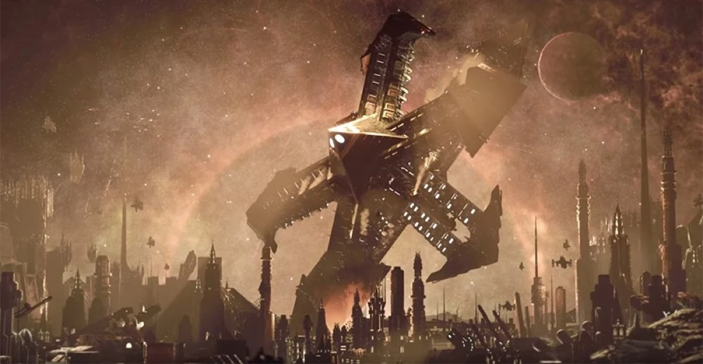

Noctilith
| Noctilith | |
|---|---|
 The Blackstone Fortress Will of Eternity falling on Cadia, 999.M41, from a pict recovered by the evacuating fleet Artwork © Games Workshop | |
| Also called | Blackstone; the Pariah Stone (some Mechanicus texts) |
| Type | Warp-resonant mineral, black and glassy, of unknown origin |
| Property | Can be charged to repel the energies of the Warp or to draw them in |
| Worked by | The Necrons, before the War in Heaven; now the Adeptus Mechanicus and the forces of Chaos |
| Notable works | The Cadian pylons; the Blackstone Fortresses; the spears of the Nachmund Gauntlet; the Pariah Nexus |
| Status | Scarce; sought across the galaxy since the opening of the Great Rift |
Noctilith, also called blackstone, is a black, glassy mineral that interacts with the energies of the Warp. Properly worked and charged, it can hold the Immaterium back from a place, so that psykers fall silent, daemons cannot manifest and a ship's warp drive will not start. Charged the other way, it draws the Warp in and releases it as raw destruction. It is rare, it is found chiefly on worlds once settled by the first Mechanicum and on the tomb worlds of the Necrons, and for most of Imperial history no one understood what it was.[1][2]
The truth began to emerge in 999.M41, when Belisarius Cawl showed that the black pylons of Cadia were Necron works of noctilith, raised to hold the Eye of Terror in check. Their fall in the last battle of Cadia contributed to the opening of the Great Rift, and since then noctilith has become the most contested resource in the Imperium. The Mechanicus mines it wherever it is found, the Necron dynasties fight to take it back, and the servants of Chaos twist it to their own ends.[1][3]
Nature
[edit]Noctilith looks like polished obsidian, but it does not behave like stone. Surveys with the Omnispex or prognosticator waves return confused and contradictory readings, and the cryptogeologists of the Mechanicus have not agreed on what it is made of.[2] Several theories are held. Some tech-priests call it the Pariah Stone and believe it is a physical form of the Null gene that makes the Sisters of Silence and the Culexus assassins blank to the Warp. Others hold that it is mined from inside cosmic singularities, or comes from another dimension.[2]
The best-supported account is Cawl's Theory of Empyric Polarity. It holds that noctilith is neither the creature of Chaos nor its enemy. Like iron it takes a charge, and which way it points depends on how it was shaped and treated. A negatively charged mass pushes the Warp away. A positive one pulls it in. The Cadian pylons and the spears of Vigilus are taken to be negative; the Blackstone Fortresses that Abaddon the Despoiler woke in the Gothic War are thought to be positive.[1]
Origins
[edit]The Necrons raised the oldest known noctilith works, some sixty-five million years ago, in the War in Heaven against the Old Ones and the Aeldari's ancestors. The Necrontyr's weakness in that war was the Warp, which their C'tan masters could not bear and which their enemies used as a weapon. Their technomandrite crypteks learned to cast pylons and obelisks of noctilith that quieted the Immaterium around them.[2][1] Imperial scholars still dispute whether the Old Ones built the Blackstone Fortresses in answer, as the Inquisition's leading view holds, or whether they too are Necron work.[2]
Imperial surveys have found that worlds settled by the first Mechanicum, in the Dark Age of Technology, often hold noctilith, and some show signs of mining tens of millions of years old. The Mechanicus of Mars guarded such worlds jealously for ten thousand years without learning why they mattered.[1]
Known works
[edit]The Cadian pylons
[edit]Cadia was studded with more than five thousand black pylons, each standing some five hundred metres above the ground and reaching two hundred and fifty beneath it, with perhaps thousands more buried. They damped the Warp around the Cadian Gate, the one stable route out of the Eye of Terror. Probe servitors that entered them came out malfunctioning or did not come out at all.[1] In 999.M41 Cawl, working with the Necron lord Trazyn the Infinite, learned how to use them to cut a region of space from the Warp. Abaddon answered by driving the damaged Blackstone Fortress Will of Eternity into the planet. The impact toppled the pylons and the Eye spread.[3][1] Smaller pylons stand on other worlds near the Eye, usually one to a world.
The Blackstone Fortresses
[edit]The Imperium found six Blackstone Fortresses adrift in the Gothic Sector in the 32nd millennium and used them as naval bases for ten thousand years. Abaddon learned in the Gothic War (139–160.M41) that they were weapons, took two of them, and used them to destroy a world and a star. One was later given to Huron Blackheart; the other fell on Cadia. A seventh was found near Precipice in the late 41st millennium.[2]

The Nachmund Gauntlet
[edit]The Nachmund Gauntlet, the one reliable passage through the Great Rift, rests on great spears of noctilith set in the crusts of Vigilus and Sangua Terra. They are polarised to repel the Warp, and Sangua Terra's are held in a suspension that keeps them pointing at Vigilus. The field between them stills the storms along the route. Abaddon's war for the Gauntlet, the War of Nightmares of the early Era Indomitus, was fought for them. The Nachmund Rift War followed.[4]
The Pariah Nexus
[edit]In the Nephilim Sector the Necrons have raised a ring of noctilith pylons whose overlapping fields leave a whole region without the Warp. Imperial ships cannot jump, psykers and Navigators are struck down, and Cawl, who wants the stone for his own devices, has led a war around it since the early Era Indomitus. See Pariah Nexus.[5]
Noctilith crowns
[edit]The servants of Chaos have used noctilith in the opposite way. Abaddon learned in the Gothic War that the stone could be polarised to attract the Warp, and thereafter hunted it across the galaxy, destroying negative deposits wherever he found them and seizing the rest. His forge-ships, working with the Black Legion's Masters of Possession, made the noctilith crowns: great rings of the stone, cut with runes in the dark tongue, driven into the ground with steel spikes at sites of geomantic power. A crown feeds raw Warp energy into the minds around it. Chaos psykers find their power swollen, while the unpsychic have nightmares that sometimes take shape as gheists. The backlash can be fatal to the user, and a psychic disaster draws more Chaos behind it.[4][2]
Crowns were first raised in numbers on Vigilus in the War of Nightmares. The Despoiler had learned the craft on Nemendghast.[4] Imperial forces destroy them on sight, but some have been captured and studied.
The Mechanicus has not copied the crowns, but it has borrowed the principle. Under Cawl's Noctilith Decree, the "aegis" fleets of the Nephilim campaign fit strongholds with noctilith wards of their own to cut the Warp's influence from them.[5] The Black Templars say, in their chronicles, that reliquary bands of dark stone are carried in the crusade fleets and that the Chapter once set them above its fortress gates. No Mechanicus record confirms this, and it is recorded here as the Chapter's account.[6]
Use by the Imperium
[edit]The Adeptus Mechanicus began mining noctilith systematically in 000.M42, after Cawl's report. His agents, led first by Magos Dominus Dentrex Ologostion, were sent to secure every known deposit by any means, and to hold it until the Priesthood could harvest it properly. The first clash was on Amontep II, where the Sautekh cryptek Agdahax rose to stop them.[1] The Mechanicus does not yet fully understand the stone, but it can mine and ship it on a scale no other power can match. Cawl's aim is to build devices, the liminal abraisers, that would wear away the Great Rift by modulating the Warp.[5]
The Grey Knights and the wider Inquisition have long known that some black stone resists daemons. Grey Knight hexagrammic wards are cut in it where it can be had, and the Ordo Malleus keeps shards in its vaults, though they are used as prisons and wards, not as weapons. Ordo Xenos teams guard the pylons of the Cadian Sector and the other worlds where they stand.[2] The Drukhari of Commorragh also raid the stone, and have laid it around the Chasm of Woe in the Obsidian Circlet to seal off the daemon-infested sub-realm that opened in the Dysjunction.[2]
Scarcity
[edit]Noctilith is in short supply. The Cadian pylons are gone, the two captured Fortresses are lost or in Chaos hands, and every known deposit is either guarded by the Necrons or claimed by a rival. Most Imperial stocks are fragments of the pylons recovered from the wreck of Cadia, and those fragments are of unreliable polarity: Chaos forces took shards from the same ruin and used them to cut warp conduits, which was the trap they set against the Indomitus Crusade at the Battle of Vorlese.[1] Cawl's agents say that the Necrons, who have mastered the stone better, are now the chief obstacle to a supply.[5]
Timeline
[edit]| Date | Event |
|---|---|
| c. 65 million years ago | The Necrons raise the first noctilith pylons in the War in Heaven |
| M32 | Six Blackstone Fortresses found in the Gothic Sector |
| M40 | Abaddon learns of the Fortresses[a] |
| 139–160.M41 | The Gothic War: Abaddon wakes the Fortresses and learns that noctilith can be polarised |
| 999.M41 | Cawl identifies the Cadian pylons; the Will of Eternity destroys them; the Great Rift opens |
| 000.M42 | The Mechanicus begins mining noctilith across the galaxy; Amontep II |
| Early M42 | Noctilith crowns raised on Vigilus in the War of Nightmares[b] |
| Early M42 | The Pariah Nexus falls silent; war begins in the Nephilim Sector[c] |
| Mid M42 | Cawl issues the Noctilith Decree[d] |
| Mid M42 | The Nachmund Rift War along the Gauntlet[e] |
See also
[edit]
Notes
[edit]References
[edit]- ^ a b c d e f g h i Crusade: Beyond the Veil (9th Edition), pg. 4. Games Workshop.
- ^ a b c d e f g h i Wraight, Chris. Watchers of the Throne: The Emperor's Legion (novel). Black Library, Ch. 29.
- ^ a b Codex: Drukhari (8th Edition), pg. 47. Games Workshop.
- ^ a b c The 13th Black Crusade (Background Book), pp. 14-15.
- ^ a b c d Warhammer 40,000: Forgebane (Boxed Set Book), pp. 2-3, 9, 13.
- ^ Crusade: Beyond the Veil (9th Edition), pg. 4. Games Workshop.